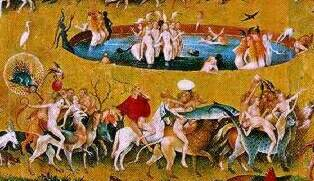

Un sueño maravilloso
¡Los dioses han muerto, los dioses han muerto! murmuraban las gentes del lugar, mientras se hacían preguntas tales como: los dioses no pueden morir, nadie puede acabar con ellos, ¿alguien tiene pruebas?, pero nadie contestaba a esas preguntas. Todos estaban confusos, iban de un lado para otro como si hubieran perdido el rumbo, yo mientras tanto les observaba y con talante sereno me decía: Míralos se sienten tan vacíos y tan confusos ante el temor de haber perdido a sus dioses que no saben que hacer. De repente se oyó decir, ¡vallamos a la gran plaza (la gran plaza era el lugar donde se erigían los templos de las distintas religiones) miré y vi que todos corrían hacia la gran plaza, cristianos, musulmanes, hindúes, judíos, budistas iban a refugiarse en sus templos y creencias al encuentro de sus ídolos y sacerdotes.
Cuando llegué a la gran plaza me vi rodeado de gentes de las distintas religiones, conversaban entre ellos acerca de tal fatal noticia, pero algo me sorprendió, nadie discutía nadie peleaba, musulmanes, judíos, hindúes, budistas, cristianos compartían esos momentos de confusión sin reparar en el odio y rencor que les distanciaba antes de ocurrir dicho suceso, me volví a decir para mis adentros: míralos hay están tan confusos que por unos momentos han olvidado las barreras que les separaban.
De repente comencé ha abrirme paso entre la multitud y me dirigí hacia el centro de la gran plaza, una vez allí rodeado de gentes tan distintas pero tan iguales decidí decirles algo: ¡Los dioses no han muerto, los dioses no han muerto! de repente todos callaron, respire hondo abrí mi corazón y les volví a hablar: Los dioses no han muerto ni pueden morir por que nunca existieron, algunas voces exclamaron: Charlatán, mentiroso tú que nos dices esas palabras dinos cual es tu dios.
El silencio se hizo de nuevo y les volví a hablar: yo no tengo ni he tenido dioses, pues yo creo en el amor y la justicia y esto conlleva el compartir, el respetar, es la unión de todos y se encuentra libre de dogmas y tradiciones absurdas ¡sólo mi corazón me puede mostrar el camino!, sin embargo vosotros antes de que entrases en esta gran plaza, vuestros dioses os enfrentaban fomentando el odio y el rencor entre vosotros; se hizo un nuevo silencio y dije: Siempre he tratado de comprender vuestras acciones, vuestras motivaciones, vuestros temores, vosotros que os hacéis llamar humanidad y carecéis de amor, vosotros que buscáis en los dioses las respuestas a vuestro destino, vosotros que os encerráis en tradiciones absurdas las cuales coartan vuestra libertad, vosotros que os regís por unos dogmas que sólo promueven el enfrentamiento y el separatismo, vosotros que codiciáis las riquezas materiales renunciando así a la auténtica belleza, sí, a vosotros os digo que es la hora de abrir vuestros corazones, pues el día que tanto esperabais por fin ha llegado, y yo os digo que no caerán sobre vosotros lenguas de fuego, ni vendrán legiones de ángeles a imponeros castigo alguno, sois libres, libres de corazón, él os dirá la verdad, id y compartir un mundo nuevo, derribar todos los templos que habéis construido y los ídolos que albergáis en ellos, rasgaros las vestiduras que os distinguen a unos de otros y no fundéis ninguna nueva iglesia o religión ya que el amor no necesita de ello.
De repente todos comenzaron a abrazarse ya no había budistas ni cristianos ni musulmanes ni hindúes ni judíos ni dioses, eran un mismo pueblo ¡todos diferentes, todos iguales! por fin habían descubierto la auténtica belleza, mientras yo con lágrimas en los ojos y lleno de paz y gozo me fui alejando poco a poco de la gran plaza, por fin reinaba la armonía y el equilibrio entre los seres humanos, había nacido una nueva humanidad llena de esperanza, ¡por fin libre! ¡ojalá no despertara nunca de este sueño!
Por un mundo libre sin discriminación, sin castas, sin dioses, sin religión.
Volver a la sección Literatura profana
Comentarios
Comments powered by Disqus